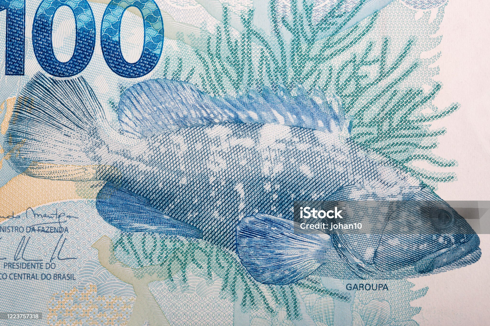
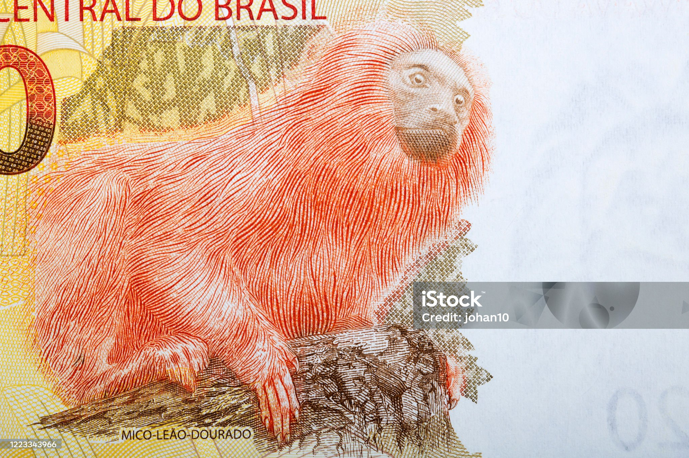
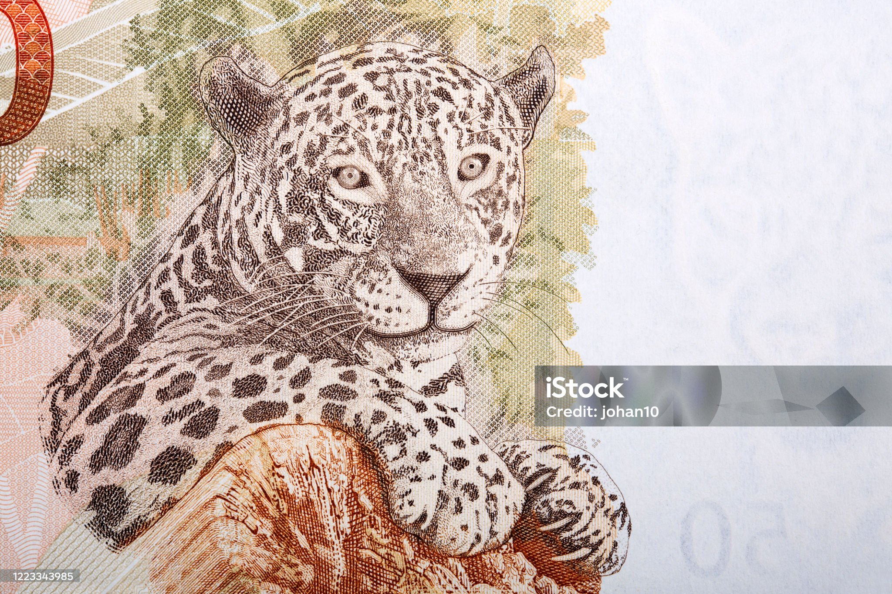
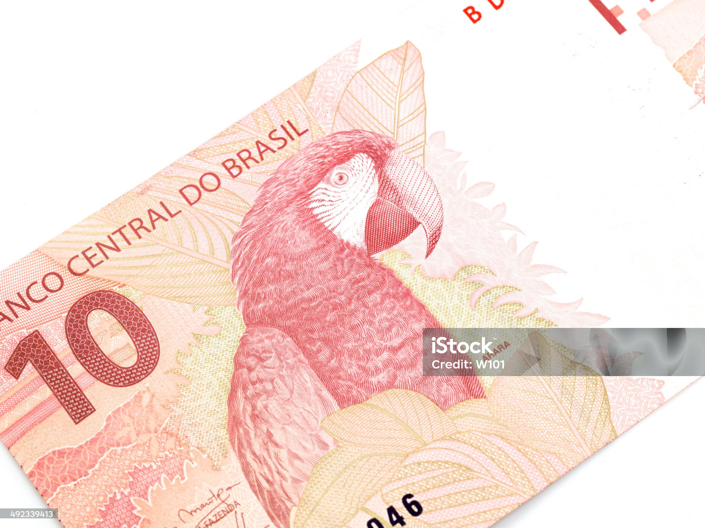
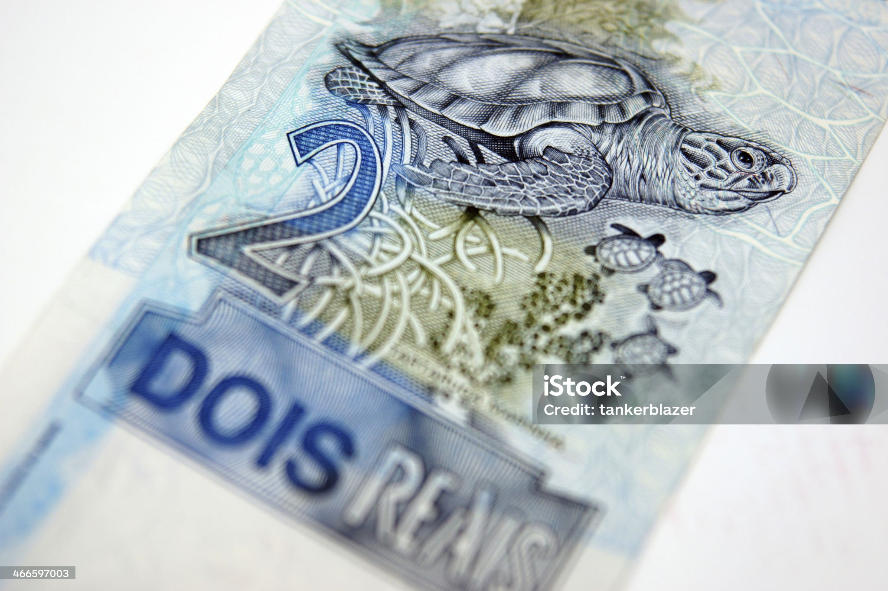

O Real brasileiro foi criado em julho de 1994 com um design totalmente diferente do cruzeiro: no verso de cada cédula é estampado um animal de nossa fauna. Isso foi feito com o intuito de estimular o interesse ao meio ambiente e à proteção da fauna. Os animais nas cédulas de 1, 5, 10, 50 e 100 reais foram escolhidos pelo Banco Central (veja abaixo). Já a tartaruga-de-pente (2 reais) e o mico-leão-dourado (20 reais) foram escolhidos pelos brasileiros em uma consulta pública, já que foram lançadas apenas em 2001. Porém, mesmo com o contato diário com as cédulas, nem todas as pessoas têm conhecimento sobre esses animais. Portanto, vamos apresentar um pouco deles para vocês!





A cédula: de R$ 1 parou de ser produzida em 2005 porque durava apenas cerca de 13 meses em circulação e sofria muitas falsificações.
Nota de plástico: No ano 2000, o Brasil ganhou uma nota comemorativa de 10 reais feita de plástico, para celebrar os 500 anos do descobrimento do país
Mulheres no dinheiro: Antes do real, as cédulas brasileiras homenageavam figuras históricas. Em toda a história do papel-moeda no Brasil, apenas duas mulheres estamparam notas: a Princesa Isabel e a poetisa Cecília Meireles.
Animais da fauna: Com o lançamento do Plano Real em 1994, as autoridades escolheram colocar animais brasileiros nas cédulas (como o mico-leão-dourado e a onça-pintada) para incentivar a preservação ambiental.
Tamanhos diferentes: A segunda família de notas do real, lançada a partir de 2010, trouxe cédulas com tamanhos variados para ajudar pessoas com deficiência visual a identificarem os valores.